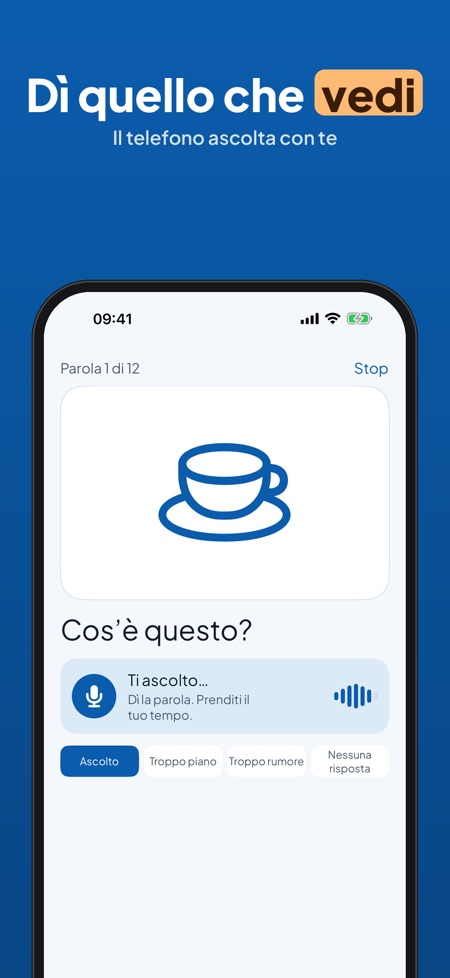
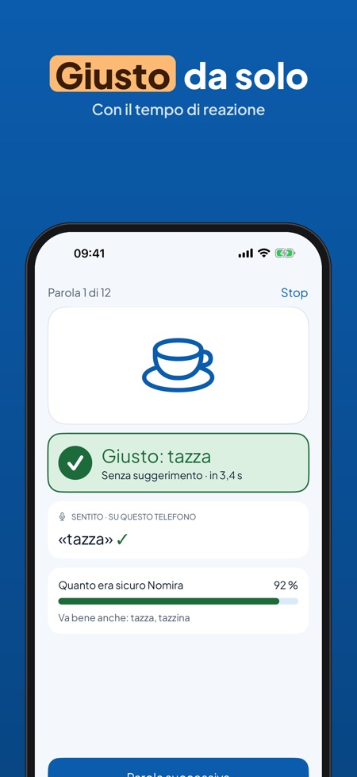
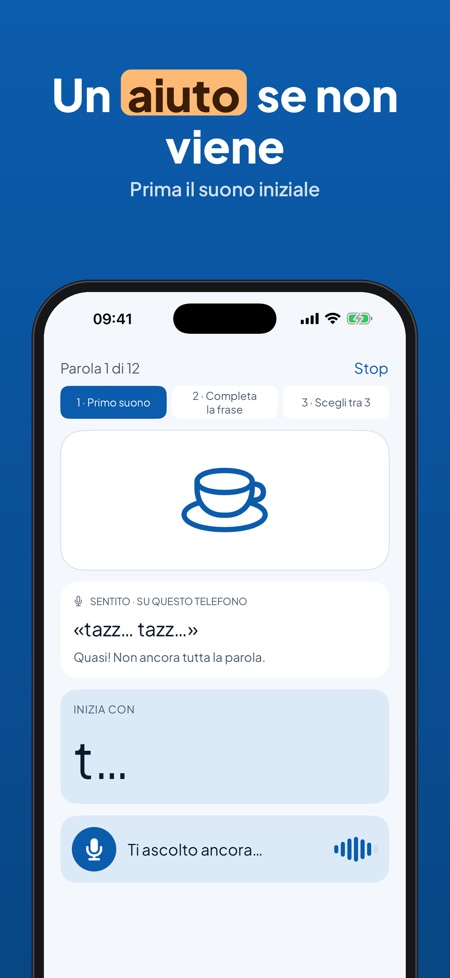

Vedi l’immagine, dì la parola. Novità per le feste: 16 parole su famiglia e stare insieme, aperte senza acquisto. Guarda l’immagine, dì la parola ed esercitati con la famiglia o il caregiver.



Nomira aiuta le persone con afasia a esercitarsi ogni giorno con le parole. Vedi un’immagine e dici la parola ad alta voce. Nomira ascolta sul telefono e mostra se ha sentito la parola. Se non viene, arriva un suggerimento: il primo suono, una frase da completare, tre parole tra cui scegliere.
La serie Cucina con 15 parole, l’ascolto, tutti e tre i suggerimenti, il tempo di reazione, i progressi di questa settimana e la modalità in cui segni tu se è andata bene funzionano senza acquisto. Nomira Plus è un acquisto unico: tutte le 10 serie, verbi compresi, i progressi delle settimane precedenti e il report settimanale in PDF, che invii tu via mail, Messaggi o AirDrop. Nessun abbonamento, nessuna pubblicità.
Nomira è un’app per esercitarsi: un complemento alle sedute con il logopedista, non un sostituto. Non fa diagnosi e non cura nulla. Il riconoscimento può sbagliare; decidi sempre tu. Il parlato è riconosciuto sul telefono; nessun suono viene salvato o inviato. Senza microfono, segni tu se è andata bene.